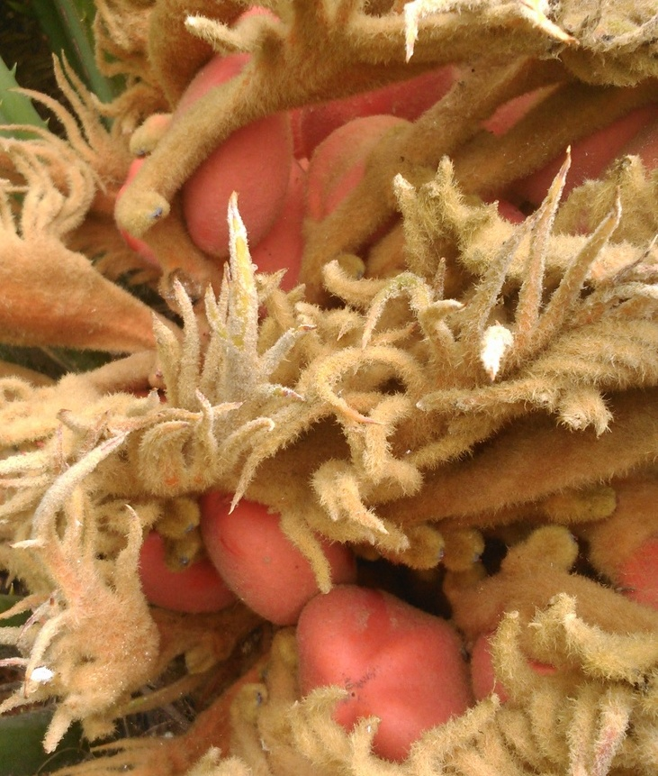

Cycas revoluta Thunb. - Cica
¿Sabías que las cicas son las plantas que más lento crecen? Son muy antiguas y vienen de África, Oceania, Australia y Japón.

Se pueden encontrar cicas hembras y cicas macho, algo muy extraño porque las plantas más habituales que conocemos son monoicas (poseen los dos sexos en una misma planta). Esto se debe a que las cicas son muy antiguas. Y es que las especies de plantas más antiguas (hace 400 millones de años que aparecieron las terrestres) tenían los sexos separados.
Cuando se dieron cuenta de que esto era un inconveniente para encontrar pareja, ya que estaban ancladas al suelo, algunas evolucionaron desarrollando el sexo masculino y femenino en ella misma. De este modo, sólo tenían que encontrar otro individuo de su misma especie sin importar el sexo para poder reproducirse. Por eso, hoy en día aún podemos ver cicas hembra y cicas macho, donde la hembra produce óvulos que deja expuestos para que entren en contacto con el polen de la cica macho.
Los óvulos parecen pequeños frutos naranjas y la estructura que lo recubre es la inflorescencia. Los individuos machos presentan un cono que parece una piña, en el centro, desde donde el polen será llevado por el viento (anemocoria) para que con algo de suerte caiga en algún óvulo.

Si quieres comprobar cuanto sabes de las Cicas selecciona a continuación tu nivel educativo